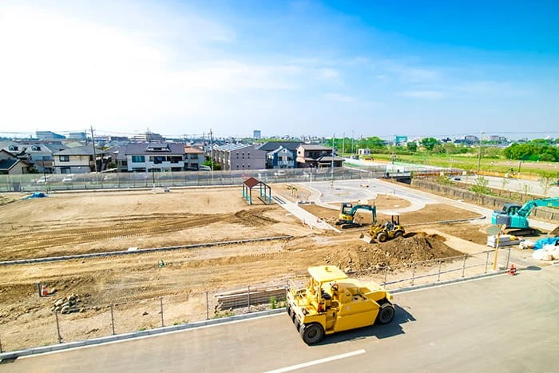
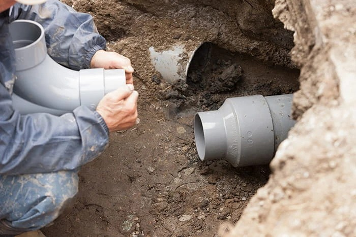
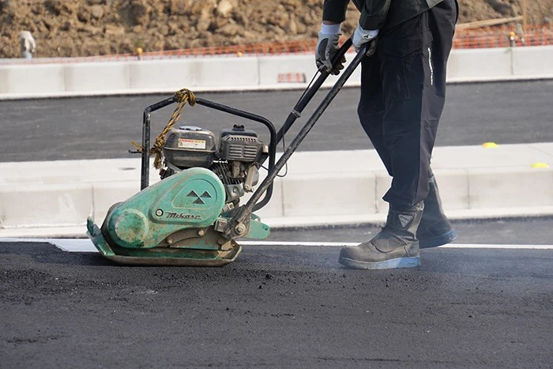
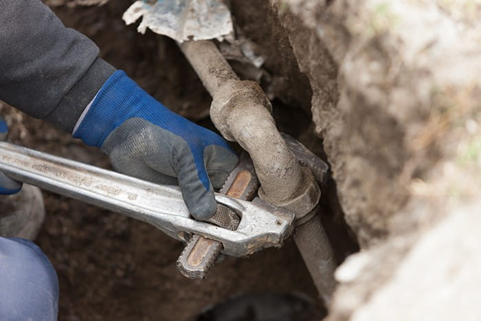
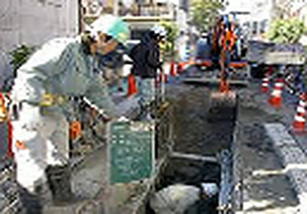
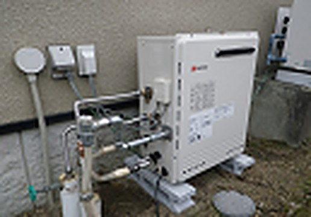
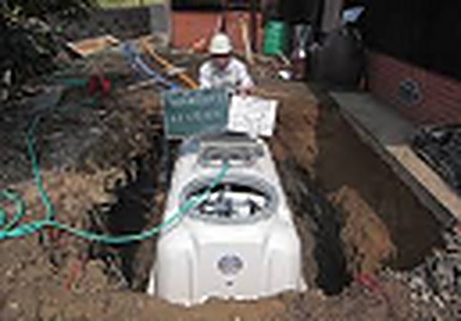

01
CIVIL ENGINEERING
土木・造成工事
宅地造成・掘削・埋戻しなど、あらゆる建設の土台となる工事を行います。地盤を整え、安全で長く使える土地をつくります。
BUILDING THE FOUNDATION OF
EVERYDAY LIFE.
埼玉県和光市から、道路・上下水道・造成工事を。
見えないところにこそ、
誠実な仕事を。
株式会社上原工業は、1979年の設立以来、埼玉県和光市を拠点に 土木工事・上下水道工事・舗装工事など、地域の暮らしに欠かせない インフラ整備に携わってきました。
私たちの仕事は、完成すると地面の下に隠れてしまうものも少なくありません。 だからこそ、見えないところまで手を抜かない「確かな施工」を大切にしています。 これからも安全第一で、地域の皆さまに信頼される会社であり続けます。
代表取締役 上原 哲也

設立
1979年
従業員数
6名
建設業許可
8業種
01
CIVIL ENGINEERING
宅地造成・掘削・埋戻しなど、あらゆる建設の土台となる工事を行います。地盤を整え、安全で長く使える土地をつくります。

02
WATER & SEWERAGE
道路下の上水道・下水道管の敷設や更新を行います。毎日当たり前に使う「水」を、確実に届け、流すための工事です。

03
PAVING
道路や駐車場のアスファルト舗装、掘削後の舗装復旧、縁石・石積みなどの外構工事まで丁寧に仕上げます。

04
PLUMBING
宅地内の給水・排水管工事から、給湯器や浄化槽の設置まで。暮らしに身近な水まわりの工事にも対応します。
01
8業種の建設業許可を保有。掘削から配管、舗装の復旧まで一貫して任せていただけます。
02
和光市を拠点に、地元をよく知るからこそ、迅速できめ細かな対応が可能です。
03
作業員はもちろん、近隣の方や通行される方の安全にも配慮した現場を徹底しています。
これまでに手がけた工事の一部をご紹介します。

道路下の水道管を敷設・更新。通行の安全を確保しながら施工しました。

給湯器の設置にあわせ、給水・給湯の配管をすっきりと施工しました。

掘削から浄化槽の据え付け、配管、埋め戻しまで一貫して施工しました。
お電話にてお気軽にご相談ください。
現場を確認し、ご要望を詳しくお伺いします。
工事内容と費用をわかりやすくご提示します。
安全管理を徹底し、確実に施工します。
仕上がりをご確認いただき、お引き渡しします。
まちの未来を、
一緒につくりませんか。
上原工業では、共に働く仲間を募集しています。
経験の有無は問いません。現場で一から技術を身につけられます。
募集職種・条件については、お電話にてお問い合わせください。
| 会社名 | 株式会社 上原工業 |
|---|---|
| 代表者 | 代表取締役 上原 哲也 |
| 所在地 | 〒351-0115 埼玉県和光市新倉2丁目31-5 |
| 電話番号 | 048-461-1854 |
| 設立 | 1979年 |
| 資本金 | 1,000万円 |
| 従業員数 | 6名 |
| 建設業許可 | 埼玉県知事許可 第001977号 |
| 許可業種 |
|
| 認定 | 和光市 企業市民認定事業所 |